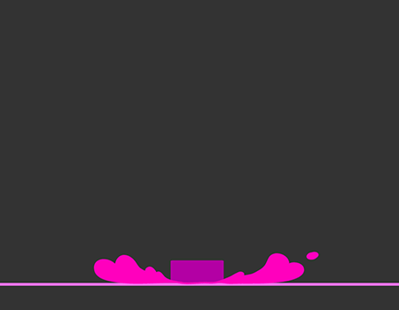

MENÚ DE JUEGOS
EXPLORA · JUEGA · DESCUBRE
Autor: Daniel Orrala
Daniel-OR9
DESARROLLADOR WEB Y CREADOR DE EXPERIENCIAS INTERACTIVAS
La creatividad también es una forma de jugar
Programando con JavaScript
Utilizamos el lenguaje de programación JavaScript junto con nuestro ingenio y creatividad para crear diversos sitios web y juegos que demuestran nuestras habilidades y conocimientos en desarrollo web.

Juego de Limones
En el proyecto "Juego de Limones" creamos un juego en el cual nuestro personaje se mueve de un lado a otro para atrapar todos los limones posibles. La velocidad aumenta a medida que avanza el juego.

Juego Cazando
En el proyecto "Cazando" controlamos a nuestro personaje para moverlo de arriba hacia abajo y de izquierda a derecha. El objetivo es atrapar la comida, que reaparece en una posición aleatoria del mapa.